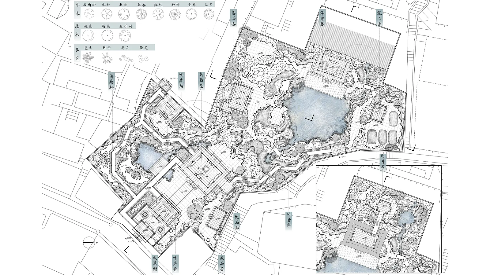
06清代江南园林设计
归樵问竹
Return to the Bamboo
清代江南古典园林建筑设计 — 以园主郑板桥为线索
- 地点
- 江苏省扬州市
- 面积
- 3,880 ㎡
- 年份
- 2025.11
- 团队
- 杨官运、王一凡
- 来源
- 大四上课程作业
- 指导
- 汪智洋
- 参与
- 前期分析、方案构思、3D 建模、工程图、后期分析、渲染、后期处理
一位以画竹闻名的文人，他的家应该是什么样？
设计缘起
清代康乾盛世是中国古典园林艺术的巅峰，文人造园蔚然成风。郑板桥是「扬州八怪」的代表，以诗书画三绝闻名，尤爱竹、兰、石。设计为他的晚年归隐造一座江南私家园林，要回答的其实是一个很直白的问题：一位以画竹闻名的文人，他的家应该是什么样？
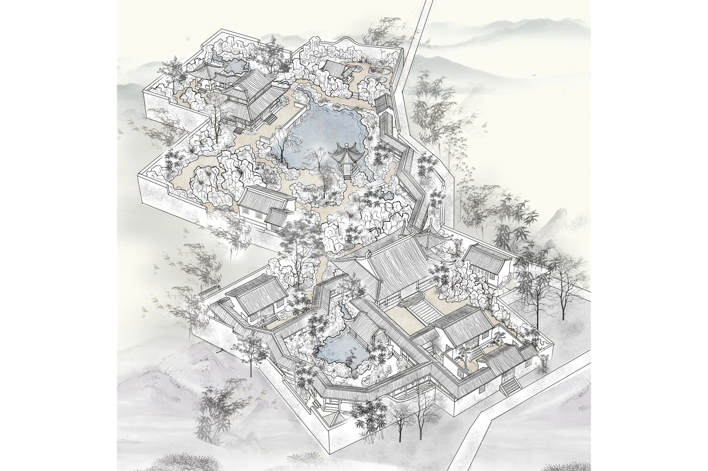
核心概念：归樵问竹
「归樵」是辞官归隐、回归乡野的朴拙；「问竹」是与竹对话、寄情笔墨的雅致。全园以竹语堂为核心，浮影楼、浣兰亭为对景，以观竹、观云、观书、观画为意趣，把「诗书画三绝」的文人风骨落在不足四千平方米的园子里。
概念推演：清修之园 → 适境之园 → 逸野野趣
竹虚心有节，兰清雅隐逸，石坚贞独立——三种植物是他人格的投射。「清修」承载写文章、作书画、听风赏竹；「适境」承载种兰草、理南园、寄情归真；「逸野」承载聚山石、赏古玩、静观心游。
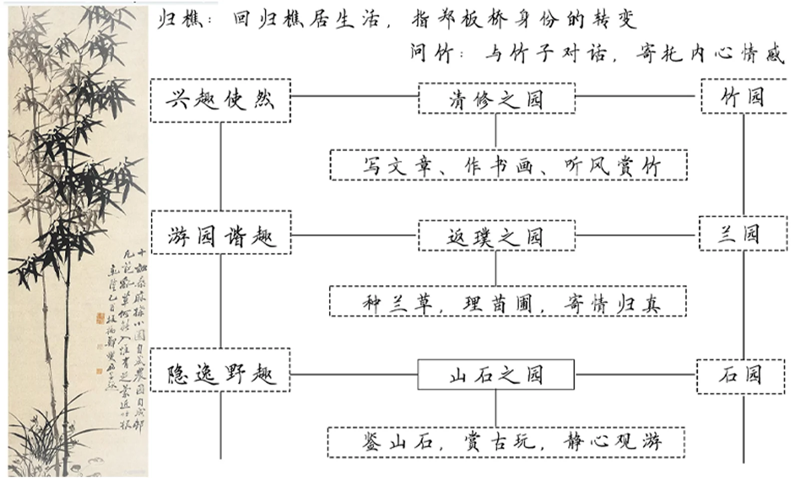
园主与时代背景
郑板桥（1693—1765），原名郑燮，号板桥，扬州八怪之一。44 岁中进士，曾任山东范县、潍县知县，后因助农民胜讼、办理赈济得罪豪绅而罢官，此后居扬州卖画为生。诗、书、画世称「三绝」，画兰竹石尤为天下知。
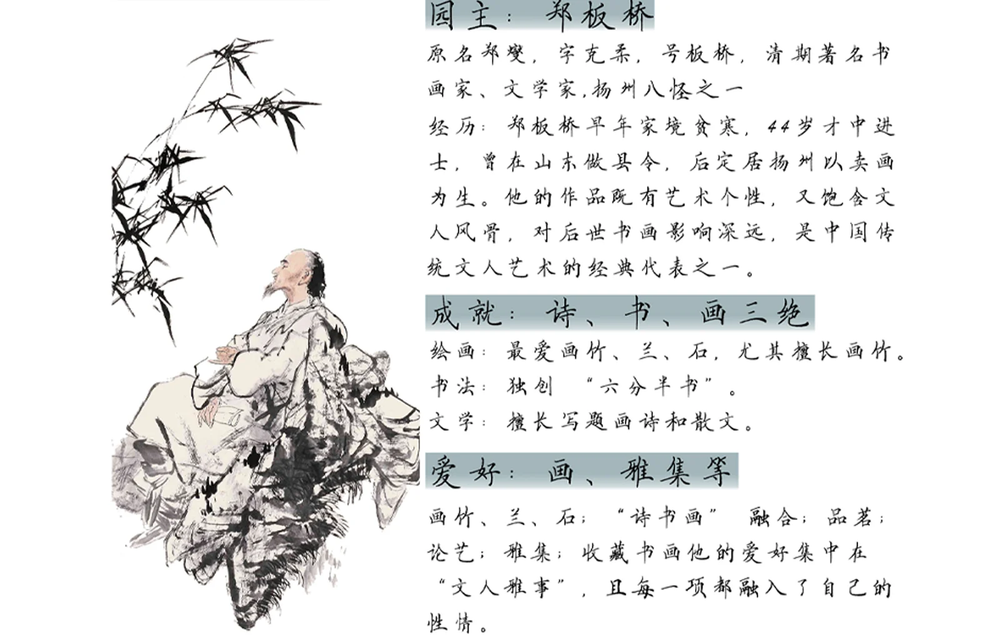
总体规划与造园手法
用地 3,880 平方米，容积率 0.10，建筑密度 0.09，绿化率 53.3%——以自然为本，建筑只作点景。主入口经清瘦径入园，过砚波居至竹语堂，绕水面到浮影楼、浣兰亭，沿山石林至煮石居、叶声堂，最后由泼墨榭出园。对景、借景、框景、夹景、透景、漏景、障景、隔景，江南园林的手法在这里都用上了。
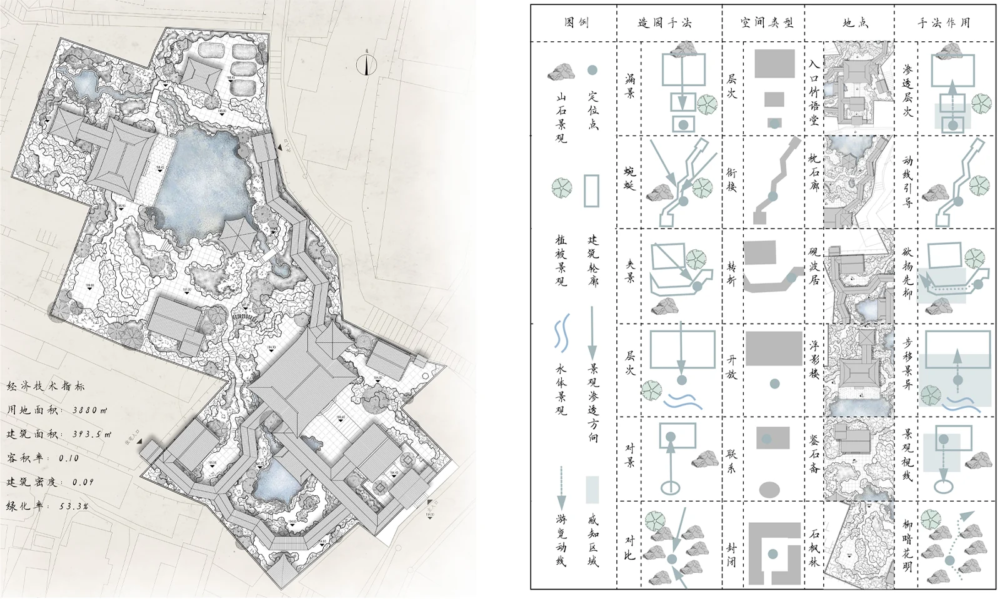
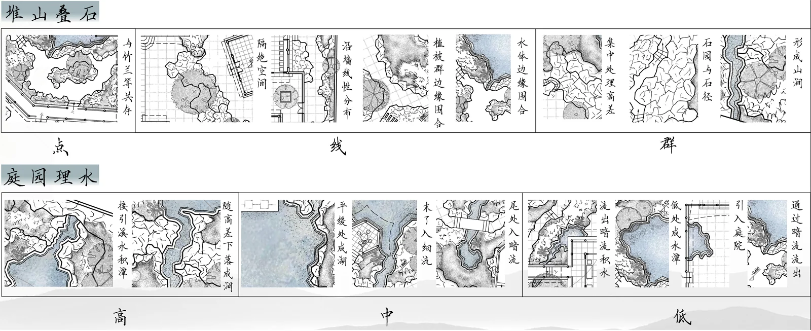
园林空间布局
接地层平面标注全园十二处节点：鉴石斋、浮影楼、浣兰亭、问月亭、回甘亭、枕石廊、煮石居、叶声堂、泼墨榭、竹语堂、砚波居、清瘦径。植物配置分三层：乔木（石榴、杏、梧桐、银杏、红枫、柳、香樟、玉兰）、灌木（桂花、腊梅、栀子）、其他（芭蕉、竹、荷花、睡莲）——四季都有可看的东西。
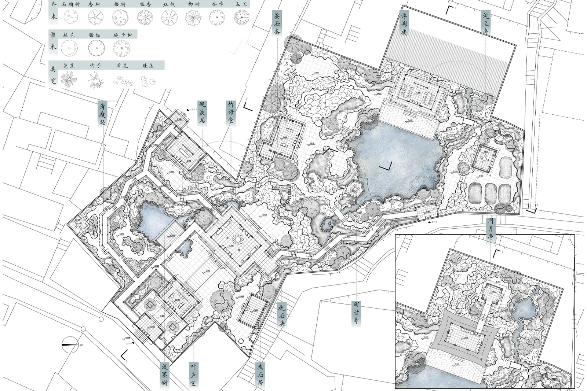
叙事与场景营造
以郑板桥一日的生活为线索：上午在砚波居写诗作画、逛清瘦径漫步竹林、在叶声堂接待客人；下午在兰圃种兰、与好友在浮影楼赏画、在问月亭对弈、在涉霞岭赏石；夜里回竹语堂宴饮、在泼墨榭酒后作诗。六种意境——静·独、谈·友、赏·喜、神·觉、见·闲、思·忘，园林在这里不只是景，是生活方式的容器。
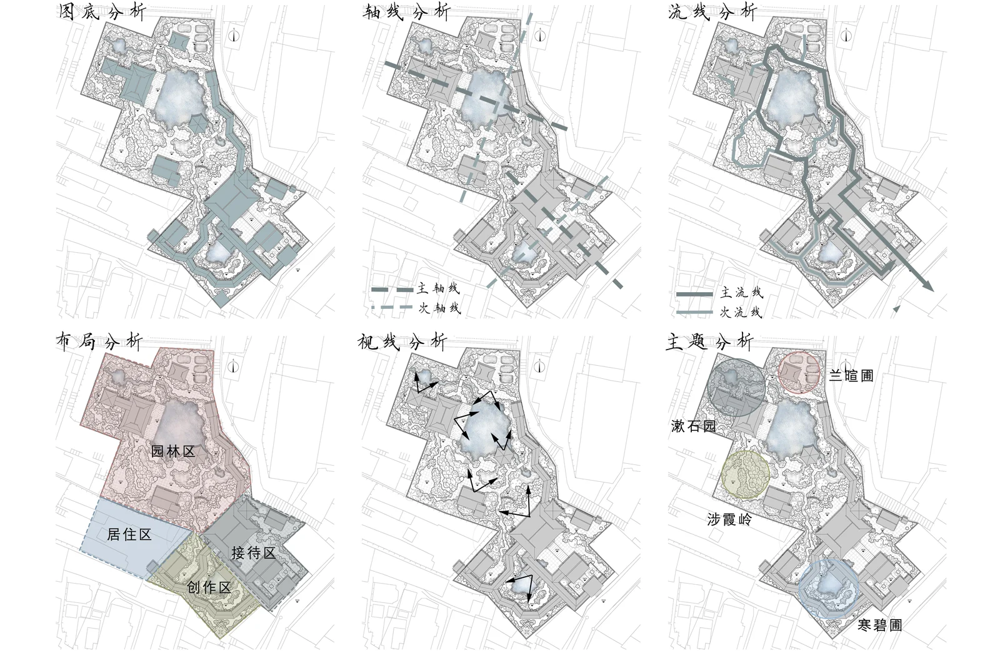
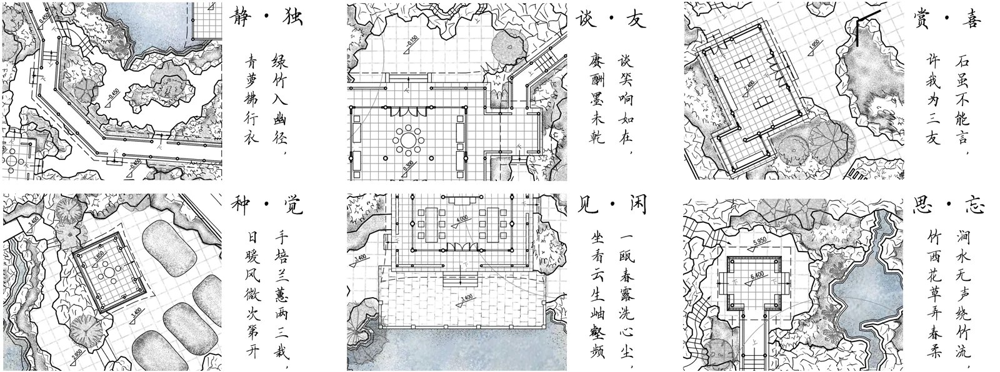
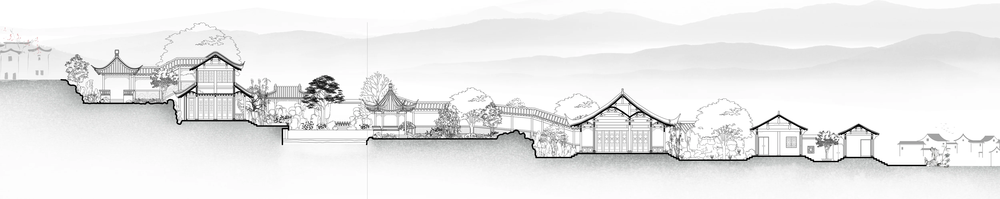
竹语堂
竹语堂为全园主体，单檐歇山顶，面阔七间，前檐设廊。构造分解呈现清代江南木构的营造逻辑：放置柱 → 设置主体屋架 → 搭设轩 → 搭设椽条 → 铺设望板屋瓦 → 安装门窗、栏板、挂落。从轴测到立面剖面，木构的工艺本身就是景。
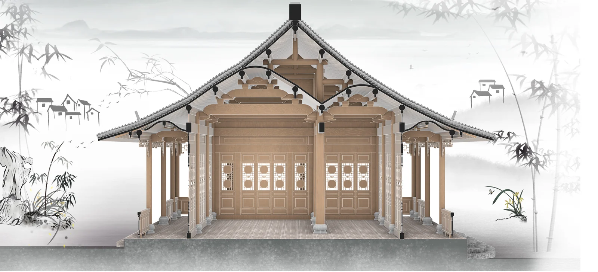
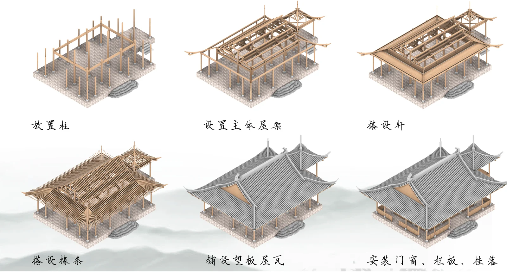
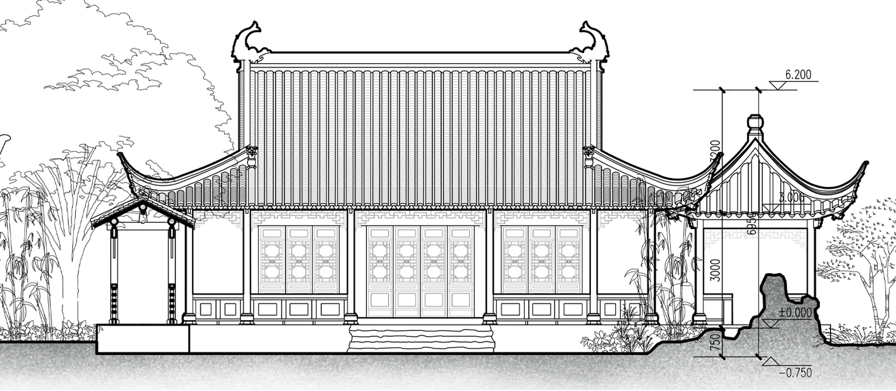
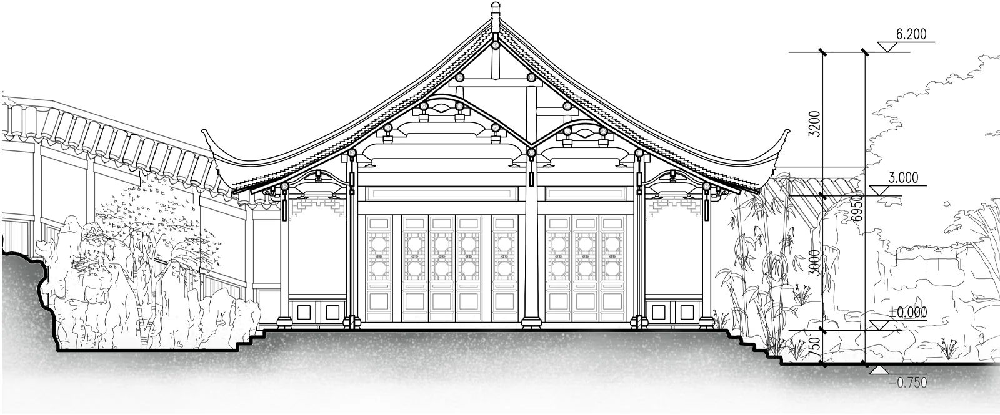
浮影楼
浮影楼是二层楼阁，一层敞厅、二层观景，可远眺园外山色，近览全园池水。木构体系与厅堂一致，但楼层更高、出檐更远，形成「浮影」的轻盈感——正如其名，建筑仿佛浮在水面与林梢之上。
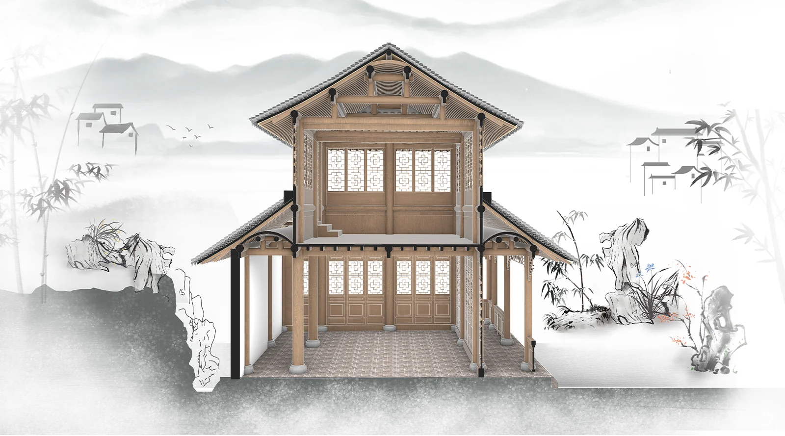
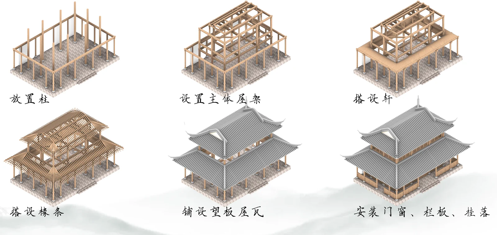
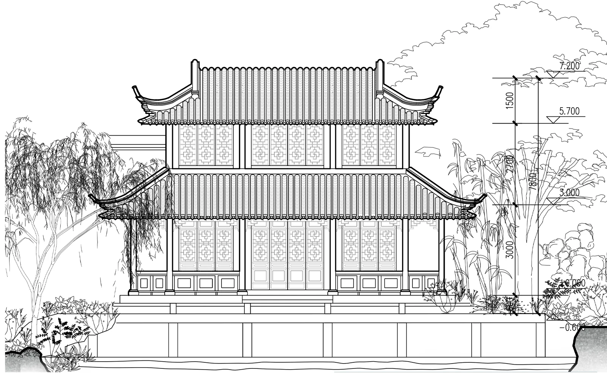
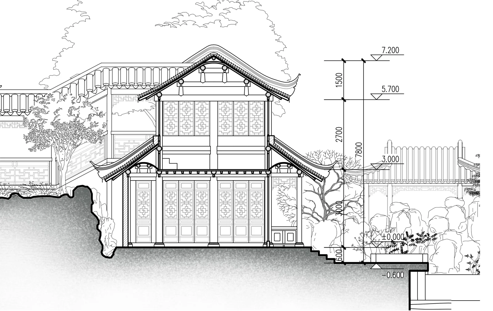